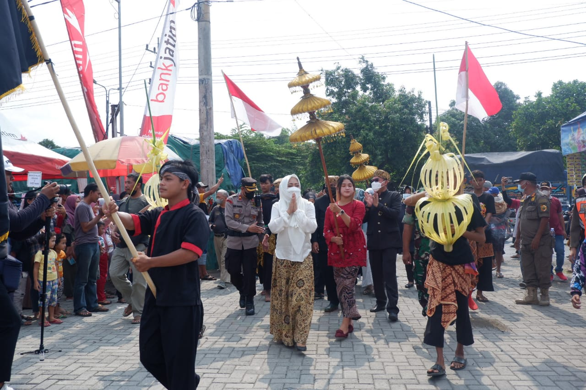

Ruwatan Suro adalah tradisi adat yang dilakukan oleh masyarakat Jawa, termasuk di Mojokerto, untuk menyambut datangnya bulan Suro (Muharram dalam kalender Islam). Tradisi ini dianggap sakral karena bulan Suro diyakini sebagai waktu yang penuh keramat, di mana berbagai energi spiritual, baik positif maupun negatif, berpotensi mempengaruhi kehidupan masyarakat. Tujuan utama dari tradisi Ruwatan Suro adalah untuk membersihkan diri dari energi buruk dan menolak bala, agar masyarakat dapat menjalani kehidupan yang lebih harmonis dan sejahtera di tahun mendatang.
Ruwatan Suro biasanya dimulai dengan ritual pembersihan, di mana sesaji dan doa dipanjatkan untuk memohon perlindungan dan berkah. Sesaji berupa makanan dan barang-barang tertentu disiapkan oleh masyarakat untuk dilepaskan ke alam, seringkali melalui upacara larungan di sungai atau laut. Ritual larungan ini melambangkan pengorbanan kepada alam dan leluhur untuk menjaga keseimbangan kosmik serta membersihkan diri dari segala hal buruk yang menimpa. Selain itu, di beberapa daerah, masyarakat juga melakukan kegiatan mencuci benda pusaka sebagai simbol pembersihan spiritual.
Dalam tradisi ini, doa dan ritual keagamaan juga memiliki peran penting. Masyarakat berkumpul untuk berdoa bersama, memohon keselamatan dan kesejahteraan. Doa dilakukan baik secara Islam maupun kepercayaan lokal yang diwariskan turun-temurun. Beberapa kelompok masyarakat Jawa bahkan menggabungkan elemen-elemen kepercayaan animisme dan Hindu-Buddha yang masih hidup di tengah masyarakat dengan keyakinan Islam, mencerminkan keberagaman tradisi yang menyatu dalam kehidupan masyarakat Mojokerto.
Ruwatan Suro juga menjadi ajang mempererat hubungan sosial antarwarga desa. Gotong royong dalam mempersiapkan acara, mulai dari mengumpulkan sesaji, membersihkan tempat ibadah, hingga pelaksanaan ritual, menciptakan suasana kebersamaan yang mendalam. Selain aspek spiritual, tradisi ini juga menjadi waktu yang dinantikan untuk merefleksikan diri, sekaligus menyegarkan kembali semangat gotong royong dan kekeluargaan dalam komunitas. Meskipun tradisi ini mengalami beberapa penyesuaian dengan perkembangan zaman, esensi dari Ruwatan Suro sebagai media perlindungan, pembersihan, dan kebersamaan tetap dipertahankan.
Selain menjadi ritual keagamaan, Ruwatan Suro juga memiliki unsur seni dan budaya yang kuat. Berbagai pertunjukan seni tradisional seperti wayang kulit, gamelan, dan reog seringkali dipentaskan untuk mengiringi perayaan ini, menambah suasana sakral sekaligus meriah. Seni pertunjukan tersebut tidak hanya menjadi hiburan bagi masyarakat, tetapi juga sarana untuk menyampaikan pesan moral dan spiritual yang terkandung dalam kisah-kisah pewayangan dan tarian. Melalui pertunjukan ini, masyarakat diajak untuk merenungkan nilai-nilai kebaikan, keberanian, dan kebijaksanaan yang dapat diaplikasikan dalam kehidupan sehari-hari. Dengan demikian, Ruwatan Suro tidak hanya berfungsi sebagai ritual penolak bala, tetapi juga menjadi wadah untuk melestarikan dan memperkuat identitas budaya lokal yang kaya akan kearifan.